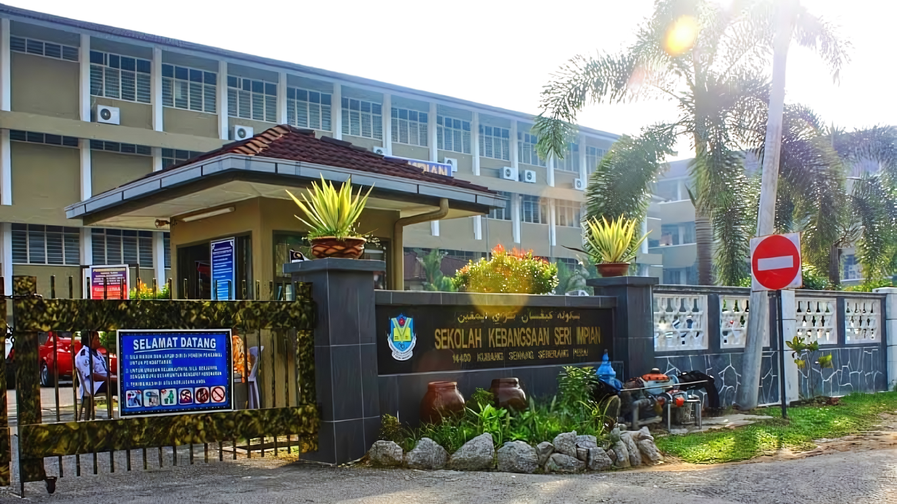
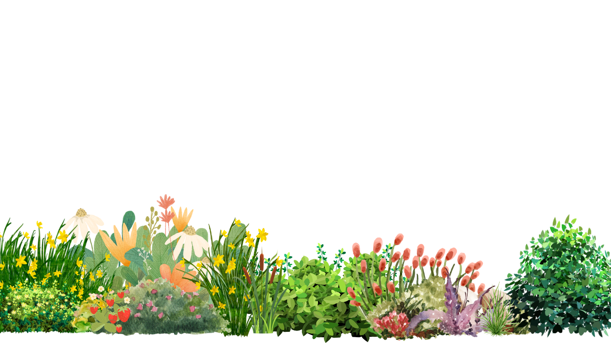
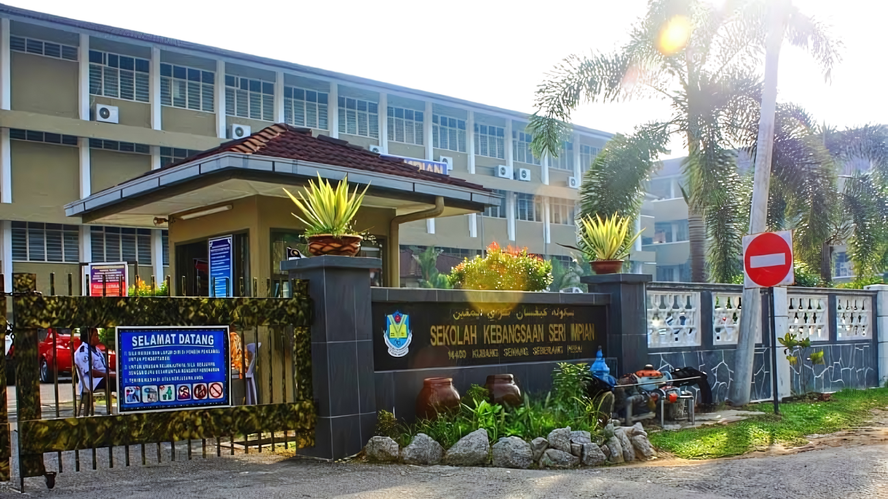
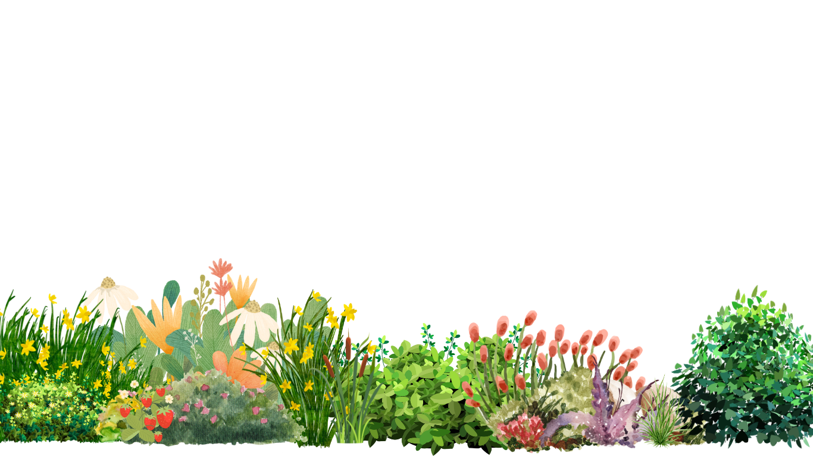
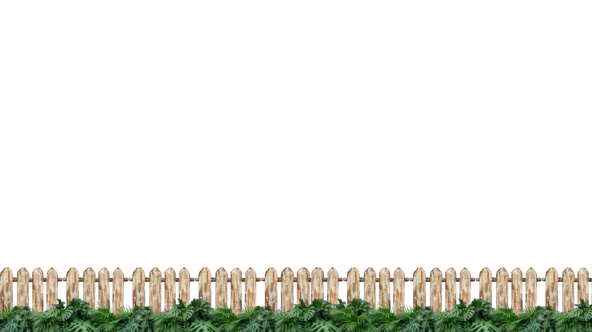
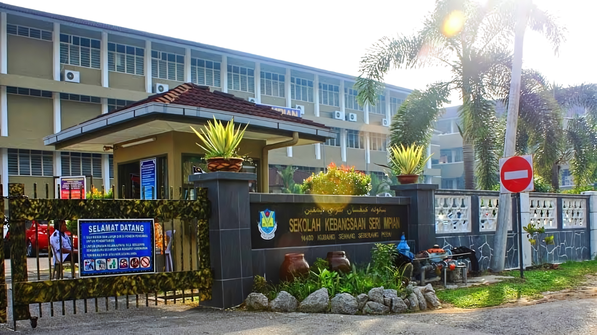
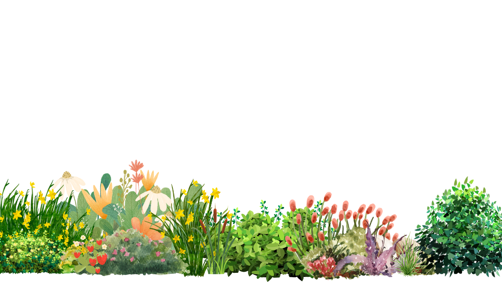
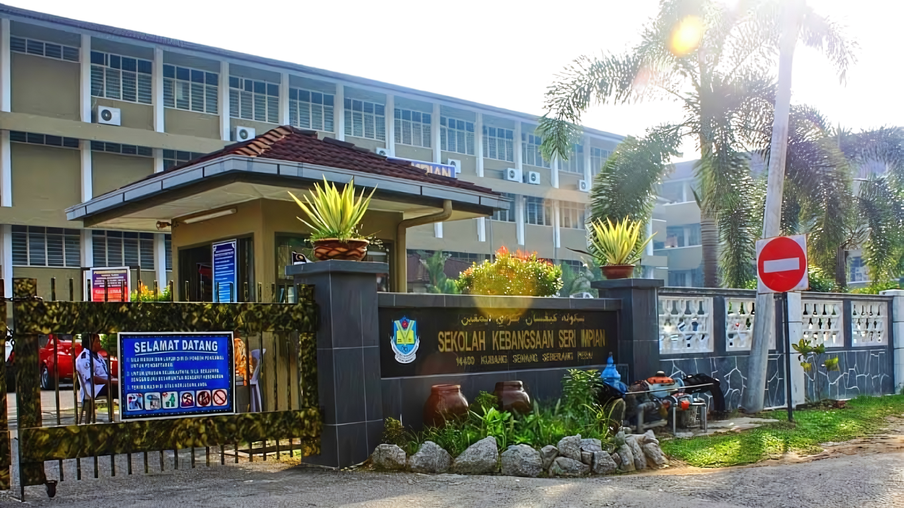
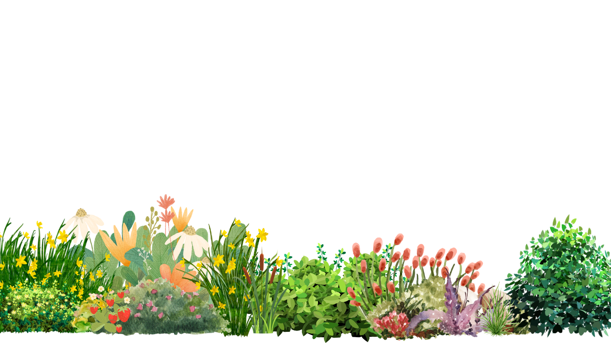

SKSI
 



Sekolah Kebangsaan Seri Impian, often known as SK Seri Impian, is a kebangsaan school located on Jalan Guar Perahu in Kubang Semang. In 2009, Sekolah Kebangsaan Seri Impian had 373 male students and 404 female students, making a total of 777 students. It had 52 teachers.
Early Years: Standard 1 and 2
Ahmad Yusuf started his primary education at Sekolah Kebangsaan Seri Impian with a mix of excitement and nervousness. In Standard 1, he quickly adapted to the new environment, making friends and discovering his love for learning. His teachers noticed his keen interest in reading, often finding him immersed in books during recess. Ahmad's favorite subjects were Bahasa Malaysia and Mathematics, where he consistently performed well.
In Standard 2, Ahmad's confidence grew. He participated in class more actively and started showing interest in extracurricular activities. He joined the school's taekwondo club, which helped him develop discipline and physical fitness. His academic performance remained strong, and he received praise for his diligence and curiosity.
Middle Years: Standard 3 and 4
By the time Ahmad reached Standard 3, he was well-integrated into the school community. He continued to excel academically, particularly in Science, where he enjoyed conducting experiments and learning about the natural world. His teachers often highlighted his inquisitive nature and ability to grasp complex concepts.
In Standard 4, Ahmad took on more responsibilities. He became a class monitor, a role that taught him leadership and organizational skills. Ahmad also joined the school's robotics club, which sparked his interest in technology and engineering. He participated in inter-school competitions, showcasing his problem-solving abilities and teamwork.
Upper Years: Standard 5 and 6
Standard 5 was a pivotal year for Ahmad. He focused more on his studies, aiming to prepare for the upcoming UPSR (Ujian Pencapaian Sekolah Rendah) examinations. His dedication paid off as he consistently scored high marks in mock exams. Ahmad also represented his school in the district-level Science Quiz, earning a commendable position.
In his final year, Standard 6, Ahmad balanced his academic and extracurricular commitments. He was elected as the head prefect, a testament to his peers' and teachers' trust in his leadership. Ahmad played a crucial role in organizing school events, including the annual sports day and the cultural festival. His involvement in the school's debate team further honed his public speaking and critical thinking skills.